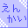

 02年度追い出しコンパ日程：03年02月08日場所：小柳 今年度の卒業生は専攻科生あわせて９人。 みなさんロボコン・相撲ロボット共に素晴らしい結果を残した方々です。 科学部で学んだことを生かして、 春からの新しい環境でも頑張っていただきたいと思います。 改めて、卒業おめでとうございます。 |
東北地区ロボコン交流会２月１日、宮城高専にてロボコン交流会が行われました。科学部では逆鱗のアーム等を持っていきました。 参加部員は是非交流会で得た技術を 今後の活動に役立てて欲しいです。 |
科学部の歴史作成中。OBのサイトで、 教科書に載る訳が無い科学部の歴史 が作られています。科学部のロボコンに携わってからの歴史がよく分かります。 現在、随時更新中？ |
NHKロボコン2002全国大会11月24日、両国国技館にてNHKロボコン全国大会が行われました。形は同じでも、東北大会とはまったく異なる機体にて参戦。 地区大会優勝校なのでシードにより２回戦から登場でした。 最終兵器であった仮想重力発生装置の一端が引っかかったために 床を傷つけるというアクシデントなどが起こり、 ２個箱を置きながらも得点が０−０、審査員判定が１−２で負け。 みなさん応援ありがとうございました。 |
高専祭 ロボコン実演日程：02年10月27日場所：第２体育館 高専祭にて、科学部はロボコンの実演を行いました。 ＃本当はパンフレットにも載っていない参加… 科学部の「逆鱗」、有志チームの「吾郎」がそれぞれ実演。 対戦こそ出来なかったものの、 その迫力は集まってくれた人たちを魅了したと思います。 逆鱗には、全国大会もこの調子でがんばって欲しいものです。 |
NHKロボコン2002東北地区大会10月13日、秋田高専にてロボコン東北大会が行われました。仙台電波からは科学部チームと科学部員を含んだ有志チームが出場。 前日・当日の大幅なマシン改造の成功等、奇跡や運を纏いつつ、 戦略の柔軟性や得点の確実性により、 科学部チーム「逆鱗」が念願の優勝を果たしました。 11月24日、国技館へ行ってまいります。 |
第14回全日本ロボット相撲関東大会10月13日、日本工業大学で相撲関東大会が行われました。ロボコン東北大会と重なってしまったために、 OBの皆さんも総動員しての大会です。 青葉部屋からは8台のマシンが出場しました。 不戦勝により2回戦に進んだものの、3回戦までにすべてのマシンが 敗退、という結果に終わってしまいました。 3kg級最後の大会でしたが、皆さん悔いの無い試合は出来たでしょうか。 |
第14回全日本ロボット相撲東北大会9月14日、岩手県立水沢工業高等学校で相撲東北大会が行われました。青葉部屋からは10台、OBや個人参加をあわせると14台のマシンが出場し、 ノンバキュームながら操作員の技術で勝ち進んだ露草と、 運勝ちした青藍が3回戦にて同部屋対決をするなど、 見どころのある大会でした。 唯一決勝トーナメントに進出した露草はトーナメント1回戦で 惜しくも破れてしまいましたが、 この勢いは関東大会や10kg級へ繋がる事だろうと思います。 |
第9回プラクティカル教育ロボット相撲大会6月6,7日。ロボット相撲JPCA場所に行って参りました。全45台中、青葉部屋（OB含む）からは11台のマシンが出場しました。 ‥‥が、ほとんどのマシンが１回戦で負けてしてしまい、 頼りの青葉部屋唯一の磁石機、紅も三回戦で敗退。 やはり磁石型マシンを増やすべきと痛感した大会でした。 |
02年度新入生歓迎会日程：02年05月25日場所：第１共用室 新入部員は二十数人入ったのですが、参加者は5人‥‥ ちょっと参加した新入生少なかったのと、 幹事の不手際が目立ちましたが、無事終了。 部活に対する意気込みなどを再確認しました。 |
01年度部内ロボコン「壁づたいマウス」競技概要：幅210mm、高さ100mmの壁の間にマシンを走らせ、そのスピードを競う。 日程：02年03月07日→02年03月29日へ延期 結果： マイコンの勉強をコンセプトに、PIC16F84を使用したマシンを製作しました。 ロボコン終了から勉強期間も含め制作期間は４ヶ月。 早々と出来た人や延期してやっと出来た人も‥‥。 優勝：「はたらけ相沢」（庄司・菅野・相沢：１年生） ２位：「HAPPY BIRTHDAY 40」（手塚・青木：２年生） ３位：「大樹号」（高橋：２年生） ４位：「信之介」（内海：３年生） |